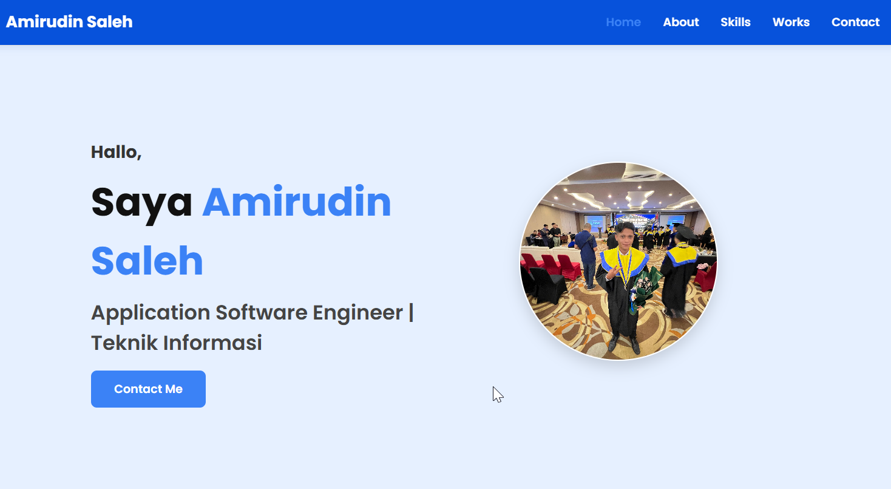

Karya Saya

Portfolio Website
Desain dan pengembangan website pribadi menggunakan HTML, dan CSS.

Library Management System
Sistem perpustakaan berbasis web dengan fitur CRUD, login, dan laporan menggunakan Laravel.

Beasiswa Data Dashboard
Dashboard analisis penerima Beasiswa KIP Kuliah menggunakan Power BI dan Python.